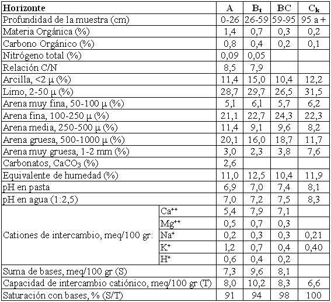

Haplustalf típico, franca gruesa, mixta, térmica
Capacidad de uso: VIsc
La Serie Pilar es un suelo algo excesivamente drenado desarrollado sobre materiales fluviales de textura franco arenosa, derramados por el río Segundo; se encuentra asociada a relieves cóncavos de antiguos cauces del río (paleocauces) y reas planas; entre dichos cauces y el actual curso del río Segundo. El horizonte superficial (A) tiene 26 cm de espesor, de textura franco arenosa y estructura en bloques moderados, escasamente provisto de materia orgánica, decolorado y duro en seco. Pasa luego en profundidad a un horizonte más rojizo (Bt) que se extiende hasta los 59 cm, es de textura franco arenosa a franca y estructura en bloques con escasos barnices finos en la cara de los agregados. El material originario (horizonte Ck), aparece a los 95 cm de profundidad, es de textura franco arenosa, masivo y con abundante calcáreo diseminado en la masa del suelo. Estos suelos poseen una baja capacidad de retención de humedad en todo el perfil debido a su textura franco arenosa, con un 50% de la fracción mineral dominada por arena. La pobre estabilidad de los agregados y el escaso contenido de materia orgánica en superficie, hace que los mismos se “planchen” fácilmente y sean muy duros en seco.
Descripción del perfil típico:
El perfil que representa el modal de la Serie Pilar fue descrito a 11,5 Km al NNO de la localidad de Laguna Larga, departamento Río Segundo, provincia de Córdoba.
A 0-26 cm; color en húmedo pardo grisáceo oscuro a pardo grisáceo muy oscuro (10YR3,5/2); color en seco gris pardusco claro (10YR6/2); franco arenoso; estructura en bloques subangulares medios moderados; duro en seco; friable en húmedo; no plástico; no adhesivo; muy decolorado; límite inferior abrupto, suave.
Bt 26-59 cm; color en húmedo pardo oscuro (7,5YR3/2); franco arenoso a franco; estructura en bloques subangulares medios moderados; ligeramente duro en seco y friable en húmedo; no plástico; no adhesivo; escasos barnices húmicos arcillosos finos; límite inferior gradual, suave.
BC 59-95 cm; color en húmedo pardo a pardo oscuro (7,5YR4/3); franco arenoso; estructura en bloques subangulares medios débiles; ligeramente duro en seco; friable en húmedo; no plástico; no adhesivo; vestigios de barnices arcillosos; límite inferior abrupto.
Ck 95 cm a +; color en húmedo pardo (7,5YR4,5/4); franco arenoso; masivo; friable en húmedo; no plástico; no adhesivo; abundante carbonato en la masa del suelo.
Cuadro Nº28
Datos Analíticos Serie PILAR
Situación: Latitud: 31º40’51”S Longitud: 63º51’13”O Altitud: 320 m.s.n.m.
 |